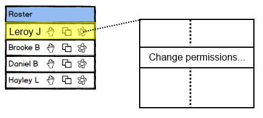
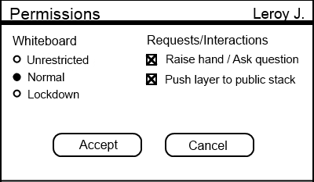
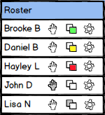
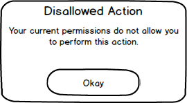

The presenter can access multiple student permissions that either restrict or enable a student to participate in various parts of an EClass session.
Figure 1 shows how to access the 'Change permissions' option.

Figure 1: Accessing the permissions.
Figure 2 shows the permissions window after clicking on the 'Change permissions' option.

Figure 2: The permissions window.
The "Whiteboard" category consists of a radio button group with three radio buttons corresponding to the different whiteboard permission levels. The first level is "Unrestricted" and means the student can utilize both private and public whiteboard layers. The student may freely alter the public layers on slides and have the class see them. The "Normal" level is selected by default and allows the student to edit his or her private layers. However, the student can also push private layers to the public presenter stack on a case-by-case basis if the presenter allows it. The final level, titled "Lockdown", prevents the student from making any form of whiteboard layer modification. Additionally, a student in "Lockdown" can no longer navigate between slides. He or she can only see the slide currently selected by the presenter. The student navigation page includes further detail on how slide navigation is affected by the "Lockdown" permission level.
The "Requests/Interactions" category includes two check box options. The first check box indicates whether or not the student is allowed to raise their hand and ask a question. The second check box indicates whether or not the student is allowed to request pushing a whiteboard layer to the public presenter stack. Both of these check boxes are enabled by default.
The presenter clicks 'Accept' to save any permission changes for the student and close the window. The EClass does not save any changes to the student's permissions if the presenter clicks 'Cancel'.
Figure 3 shows the visual effects of the different permissions options.

Figure 3: The roster with visible permissions effects.
The "Requests/Interactions" permissions have no visual effect when they are checked. Their effects when unchecked are shown in the roster slots for John and Lisa. John's greyed out hand icon indicates that the presenter revoked his ability to raise his hand and ask questions. Lisa has the background box of her layers icon greyed out, which indicates that the presenter revoked her ability to request pushing a public layer to the presenter stack.
Students who attempt to perform an action that is not currently allowed by their permissions are presented with an informational dialog.
Figure 4 shows the disallowed action dialog.

Figure 4: The disallowed action dialog.